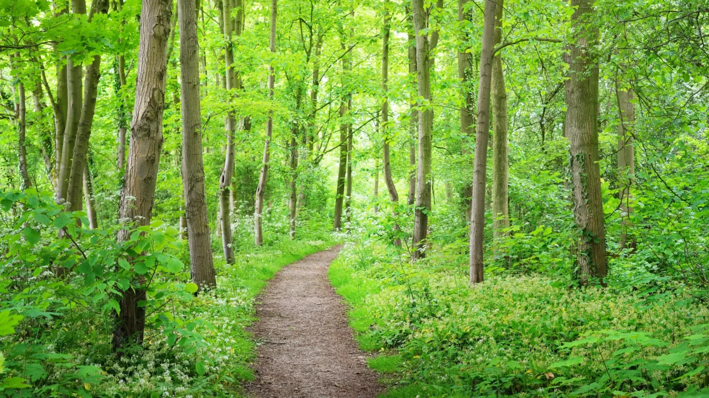

IoT Voorbeelden
Groene planten
Bomen planten is essentieel voor een gezond klimaat. Ze nemen CO₂ op, produceren zuurstof en helpen de opwarming van de aarde te vertragen. Bomen bieden schaduw, verminderen hitte in steden en verbeteren de luchtkwaliteit. Daarnaast beschermen ze biodiversiteit door leefruimte te bieden aan planten en dieren. Meer bomen betekent een gezondere planeet voor iedereen.
Minder CO2 uitstoot
CO₂-uitstoot door vervoer kan verminderd worden door vaker gebruik te maken van openbaar vervoer, fietsen of wandelen. Elektrische voertuigen zijn een duurzamer alternatief voor traditionele auto’s op fossiele brandstoffen. Carpoolen en het delen van ritten verlaagt ook de uitstoot per persoon. Daarnaast kunnen we kiezen voor duurzamere vracht- en scheepvaartopties. Door deze keuzes te maken, verminderen we de impact van vervoer op het klimaat.

Recycleren
Recycleren helpt afval te verminderen en grondstoffen te besparen. Door materialen zoals papier, plastic, glas en metaal opnieuw te gebruiken, verlagen we de vraag naar nieuwe producten en verminderen we vervuiling. Het scheiden van afval maakt recycling efficiënter en effectiever. Recycleren draagt bij aan een circulaire economie, waarbij producten langer meegaan. Zo zorgen we voor een duurzamer milieu voor de toekomst.

 Xaverianenstraat 10, 8000 Brugge
Xaverianenstraat 10, 8000 Brugge info@iot4climate.be
info@iot4climate.be +32 50 10 20 30
+32 50 10 20 30